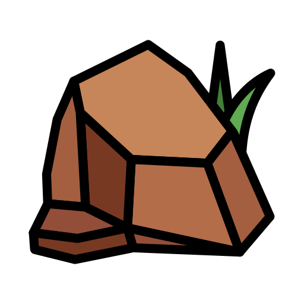

Lézard des murailles
 Apparence
Apparence
Le lézard des murailles est un petit reptile mince, mesurant généralement entre 15 et
20 cm. Son dos est brun ou gris, parfois tacheté, avec une ligne sombre le
long du corps.
Sa queue
est longue et fine, et il peut la perdre pour échapper à un prédateur !
Où il vit
On le rencontre principalement en Europe, dans les régions ensoleillées. Il aime se prélasser sur les pierres, les murets ou les chemins chauffés par le soleil .
Habitat
Ce lézard affectionne les murs de pierres sèches, les talus, les rochers et parfois les jardins. Il préfère les milieux ouverts, secs et bien exposés à la lumière.
 Mode de vie
Mode de vie
Actif surtout le jour, il se nourrit d’insectes, d’araignées et de petits invertébrés. Rapide et agile, il passe une bonne partie de son temps à se chauffer au soleil pour réguler sa température.
Fun facts
Son nom scientifique est Podarcis muralis.
Le lézard des murailles peut changer
légèrement de couleur selon la saison,
il arbore des couleurs verte en printemps, devient brunâtre en été, et
gris en
automne.